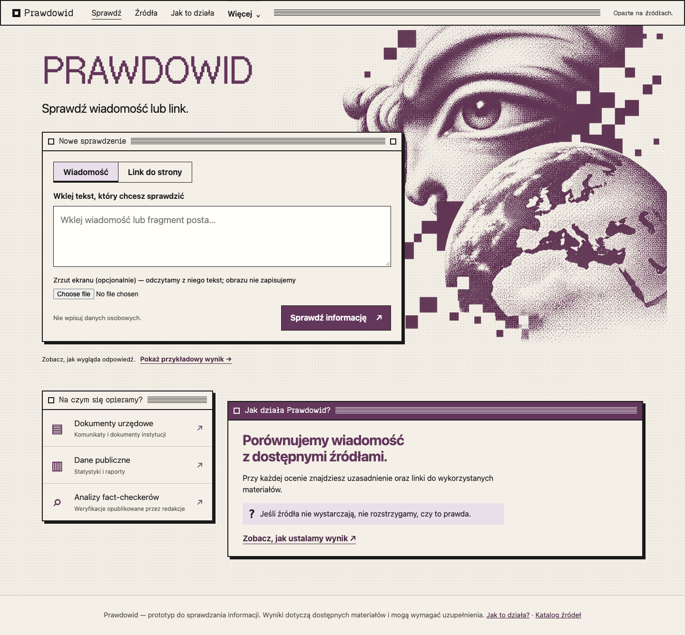
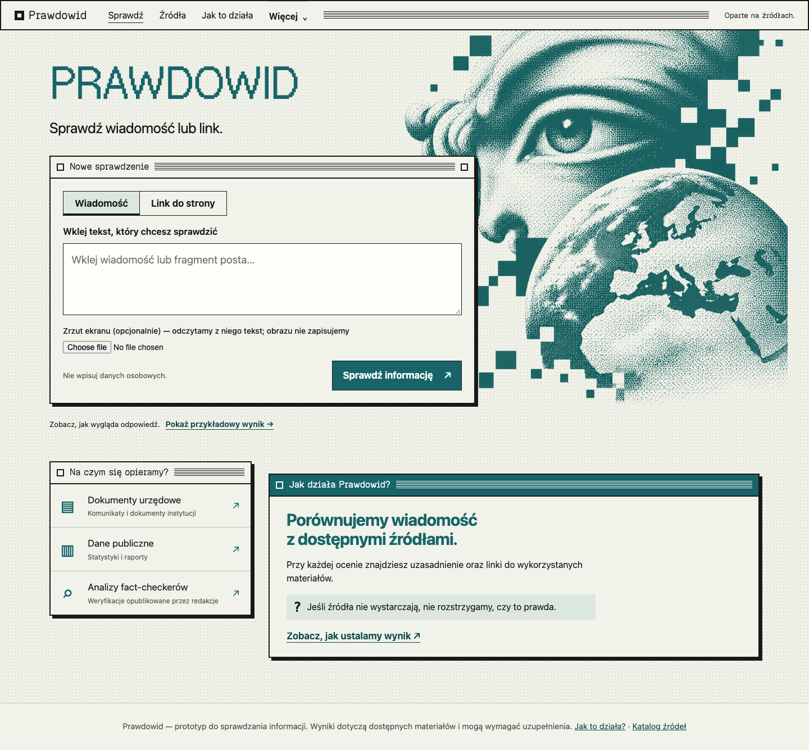
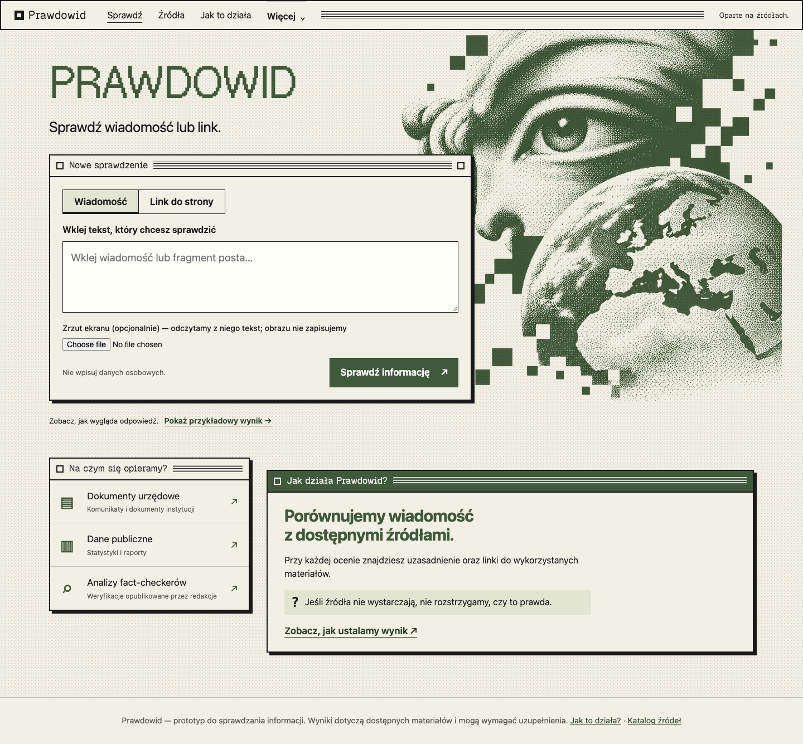
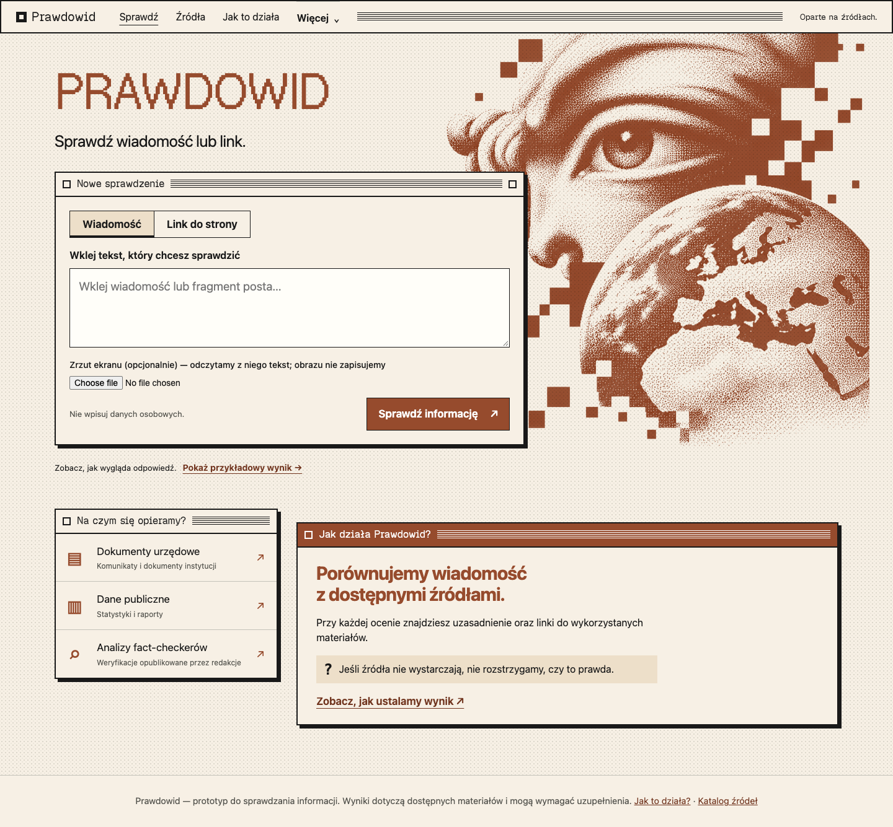

01 / Oberżyna i pergamin#63365b#472541#f4f0e8#e9dfebMój wybór: wyrazisty, redakcyjny charakter. Kolor marki wyraźnie oddzielony od ocen prawda / fałsz.Pełny ekran ↗Telefon ↗Wynik ↗Wtyczka ↗
02 / Petrol i kość słoniowa#176568#10494c#f1f3eb#dce8dfSpokojny i rzeczowy. Najbliższy narzędziu analitycznemu, z chłodnym, przygaszonym akcentem.Pełny ekran ↗Telefon ↗Wynik ↗Wtyczka ↗
03 / Las i papier#40583b#2d4029#f2f0e5#e2e5d2Stonowany, archiwalny i ciepły. Najbardziej naturalne połączenie z papierem i grafiką rastrową.Pełny ekran ↗Telefon ↗Wynik ↗Wtyczka ↗
04 / Miedź i piasek#964b2d#71351f#f7f0e5#eddfc9Ciepły, odważny i plakatowy. Najmocniej zmienia odbiór dotychczasowej identyfikacji.Pełny ekran ↗Telefon ↗Wynik ↗Wtyczka ↗